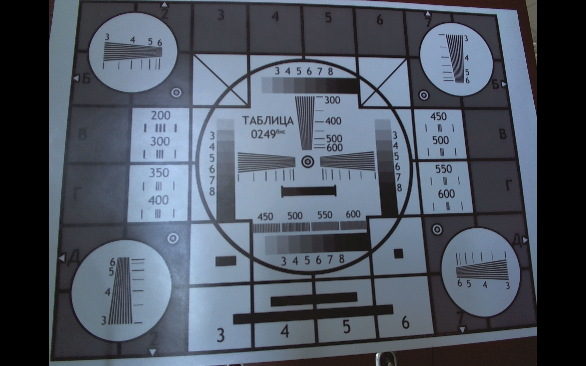
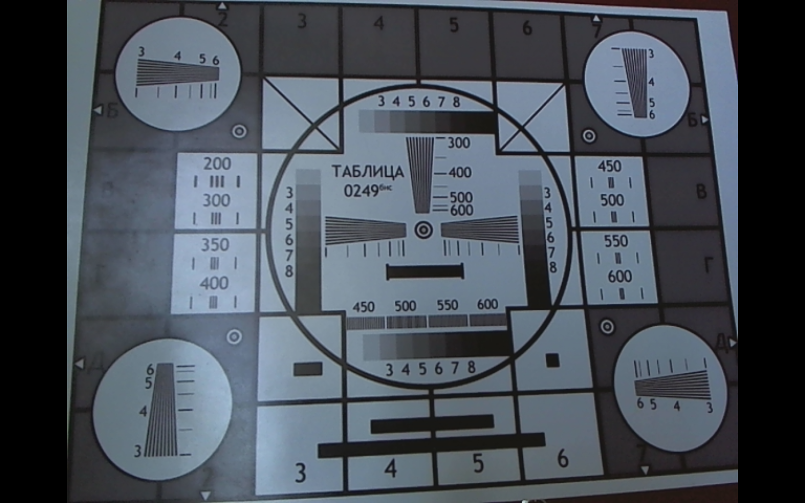
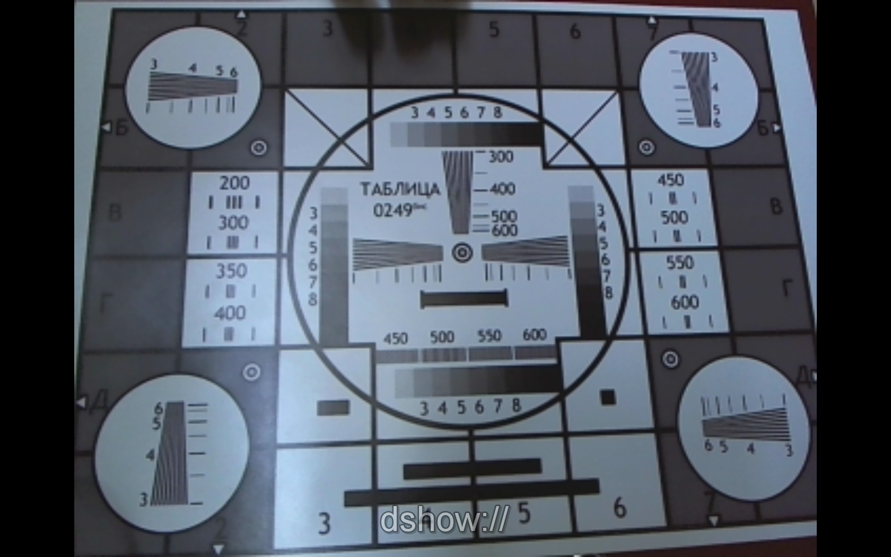
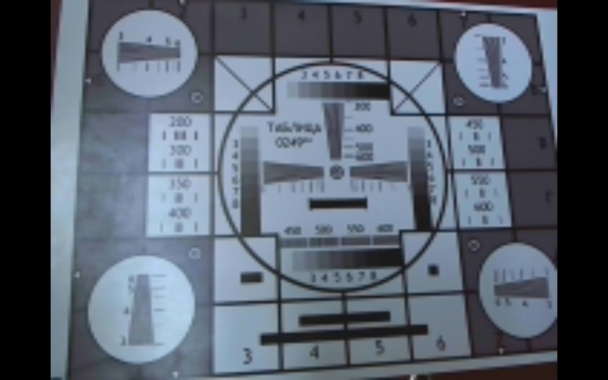
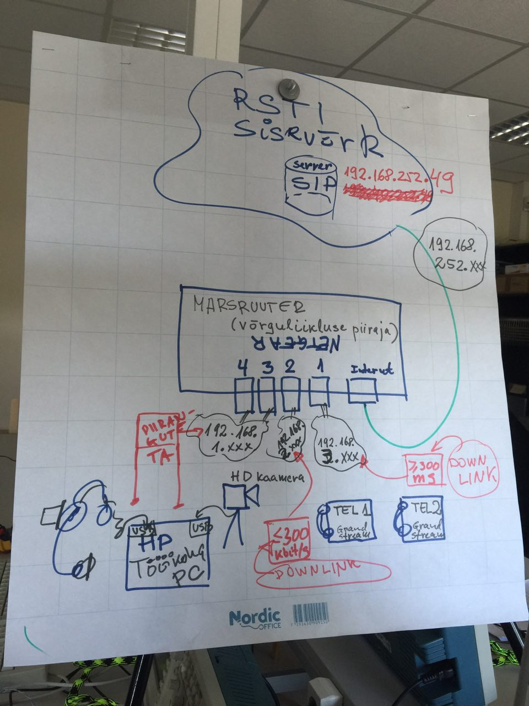

| Töö tegijate nimed: |
| Neeme Tingas |
| Aleksei Volkov |
| Töö tegemise kuupäev: Sun Apr 10 10:54:01 2016 |
| Suurim võimalik | eraldusvõime hinnang | eraldusvõime | kaadrisagedus | sisu bitikiirus | Arvutada pakkimata video edastuskiirus |
| kõik joonegruppid on selgelt eraldatavad | 2592x1944 | 10 | 600638 kb/s | 2592 * 1944 = 5 038 848 piksel/kaader 5 038 848 * 12 = 60 466 176 bit/kaader 60 466 176 * 10 = 604 661 760 bit/s |
|
|  | |||||
| VGA | eraldusvõime hinnang | eraldusvõime | kaadrisagedus | sisu bitikiirus | Arvutada pakkimata video edastuskiirus |
| gruppid 200-350 saab eraldada vertikaalseid jooni, alates gruppist 400 ei saa jooni selgelt eraldada | 640x480 | 30 | 93220 kb/s |
640 * 480 = 307 200 piksel/kaader 307 200 * 12 = 3 686 400 bit/kaader 3 686 400 * 30 = 110 592 000 bit/s |
|
|  | |||||
| CIF | eraldusvõime hinnang | eraldusvõime | kaadrisagedus | sisu bitikiirus | Arvutada pakkimata video edastuskiirus |
| joonegrupp 200 saab selgelt eraldada, ülejaanud gruppid mitte | 352x288 | 30 | 30899 kb/s |
352 * 288 = 101 376 piksel/kaader 101 376 * 12 = 1 216 512 bit/kaader 1 216 512 * 30 = 36 495 360 bit/s |
|
|  | |||||
| QCIF | eraldusvõime hinnang | eraldusvõime | kaadrisagedus | sisu bitikiirus | Arvutada pakkimata video edastuskiirus |
| isegi numbrigruppid ei saa selgelt välja lugeda | 176x144 | 30 | 8638 kb/s |
176 * 144 = 25 344 piksel/kaader 25 344 * 12 = 304 128 bit/kaader 304 128 * 30 = 9 123 840 bit/s |
|
|  | |||||

| Viite aja subjektiivne hinnang: | |
| X-Lite | 0s latency |
| Grandstream (TEL1) ühendatud kommutaatori porti tähistusega 2 | 10s latency |
| Grandstream (TEL2) ühendatud kommutaatori porti tähistusega 1 | 0s latency |
Järeldused katsetulemuste kohta:
X-Lite'iga tehtud kajatest andis parima tulemusena. Paremuselt järgnes sellele Grandstream (TEL2), mis oli ühendatud kommutaatori porti tähistusega 1 ja kõige viletsam oli Grandstream (TEL1), mis oli ühendatud porti tähistusega 2.
Küsimus: 2. Mis on võimalike erinevuste põhjuseks?
Vastus:
Kodeekide erinevus(telefonil h.264). Videokõne jaoks peaks mõlemas otsas olema sama kodek.
| Ping tulemused: | |
| Grandstream on ühendatud kommutaatori porti tähistusega 3 (piiramata võrk) | Average = 0ms |
| Grandstream on ühendatud kommutaatori porti tähistusega 2 (200 kbit/s) | Average = 3ms |
| Grandstream on ühendatud kommutaatori porti tähistusega 1 (300 ms) | Average = 300ms |
| Ping pika paketiga tulemused:
Paketi pikkus 65500. | |
| Grandstream on ühendatud kommutaatori porti tähistusega 3 (piiramata võrk) | Average = 14ms |
| Grandstream on ühendatud kommutaatori porti tähistusega 2 (200 kbit/s) | Average = 2692ms |
| Grandstream on ühendatud kommutaatori porti tähistusega 1 (300 ms) | Average = 316ms |
Järeldused katsetulemuste kohta:
Piiramata võrguga pordis on pingi aeg kõige väiksem ja paketi pikkuse muutmine ei mõjutanud olulisel määral pingi aega. Pordis nr. 1 on ping umbes 300 ms sõltumata paketi pikkusest. Pordil nr. 2 on kiirusepiirang ja suurem paketi pikkus annab oluliselt suurema pingi aja.
| 1) Grandstream on ühendatud kommutaatori porti tähistusega 2 (200 kbit/s). Videokõne X-lite ja Grandstream vahel. | |
| Kõne (pilt ja heli) kvaliteedi subjektiivne hinnang, kui Grandstream on ühendatud kommutaatori porti tähistusega 2: | kõne ja pildi kvaliteet on väga kehv |
| 2) Grandstream on ühendatud kommutaatori porti tähistusega 1 (300 ms). Videokõne X-lite ja Grandstream vahel. | |
| Kõne (pilt ja heli) kvaliteedi subjektiivne hinnang, kui Grandstream on ühendatud kommutaatori porti tähistusega 1: | kvaliteet on hea, olemas väike latency |
Järeldused katsetulemuste kohta:
Porti nr. 2 ühendatud Grandstreami korral on ajanihe väga suur, kuna pordi kiirus on piiratud. Porti nr. 1 ühendatud Grandstreamiga on kõne kvaliteet hea, puudub märkimisväärne ajanihe.
Punkti 5.2 tulemuste põhjal arvutatud sidekanali edastuskiirus kasutajale:
Port 1: Aeg = 316 ms / 2 = 158 ms = 0,158 s 65500 baiti / 0,158 = 414 556,96 bait/s = 404 KB/s Port 2: Aeg = 2692 ms / 2 = 1346 ms = 1,346 s 65500 baiti / 1,346 = 48 662,70 bait/s = 47 KB/s Port 3: Aeg = 14 ms / 2 = 7 ms = 0,007 s 65500 baiti / 0,007 = 9 357 142,85 bait/s = 9 137 KB/s
Kui palju tuleks kokku pakkida punktis 1 arvutatud pakkimata videosid, et sidekanal ei mõjutaks edastuse kvaliteeti?
Port 1: HD: 604 661 760 bit/s / 8 / 414 556,96 = 182 korda VGA: 110 592 000 bit/s / 8 / 414 556,96 = 33 korda CIF: 36 495 360 bit/s / 8 / 414 556,96 = 11 korda QCIF: 9 123 840 bit/s / 8 / 414 556,96 = 2 korda Port 2: HD: 604 661 760 bit/s / 8 / 48 662,70 = 1553 korda VGA: 110 592 000 bit/s / 8 / 48 662,70 = 284 korda CIF: 36 495 360 bit/s / 8 / 48 662,70 = 93 korda QCIF: 9 123 840 bit/s / 8 / 48 662,70 = 23 korda Port 3: HD: 604 661 760 bit/s / 8 / 9 357 142,85 = 8 korda VGA: 110 592 000 bit/s / 8 / 9 357 142,85 = 1,5 korda CIF: 36 495 360 bit/s / 8 / 9 357 142,85 = kokkupakkimine ei ole vajalik QCIF: 9 123 840 bit/s / 8 / 9 357 142,85 = kokkupakkimine ei ole vajalik
Labori 2 käigus oli võimalik tutvuda digitaalise heli- ja videovoo edastusega piirangutega arvutivõrgus kasutades IP-telefone. Labori punktis 1 toimus veebikaameraga salvestatud piltide resolutsiooni hindamine. Jõudsime ootuspärasele järeldusele, et kõrgem resolutsioon tagab parema kvaliteediga pildi. Labori punktides 3 ja 4 eksperimenteerisime videokõnedega ning erinevate koodekitega. Labori punktis 5 mõõtsime võrkude viiteaega ja läbilaskevõimet. Lõpetuseks tegime katseid audio- ja videokõnedega läbi erinevate piirangutega võrkude. Kokkuvõtvalt võib järeldada, et võrgu läbilaskevõimel ja edastatavale sisule esitatavatel kvaliteedinõuetel on suur roll lõpptulemuse üle.